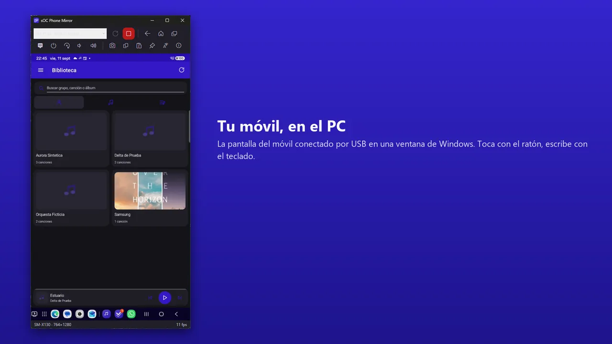
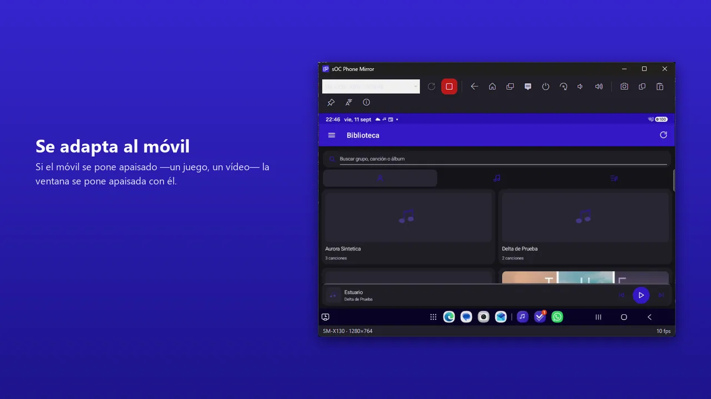
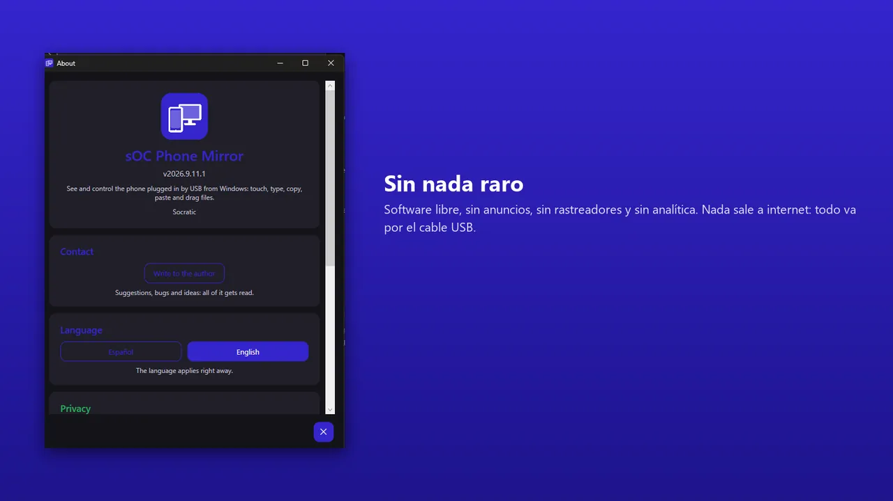

Windows
La pantalla de tu móvil Android en Windows, para manejarlo con ratón y teclado.
sOC Phone Mirror enseña la pantalla de tu móvil o tablet Android en una ventana de Windows y te deja manejarlo desde el PC: tocas con el ratón, escribes con el teclado del ordenador, copias y pegas entre los dos y arrastras ficheros para pasarlos al móvil. Es muy útil para contestar mensajes con un teclado de verdad, hacer demostraciones, grabar tutoriales o simplemente no tener que coger el teléfono mientras trabajas.
Conectas el móvil por USB y se conecta solo. La ventana se adapta al móvil: si abres un juego o un vídeo en apaisado, la ventana se pone apaisada con él. Si tienes varios móviles, puedes abrir una ventana para cada uno, y también conectarte por Wi-Fi sin cable.
Todo pasa por el cable (o por tu red local) entre el PC y el móvil: no hay cuenta, ni servidor, ni nada sale a internet. Lo que hace falta para hablar con el móvil ya va incluido en la aplicación, así que no tienes que instalar nada más. Es software libre, sin anuncios ni rastreadores.
Plataformas
Windows 10 (versión 2004) o posterior y Windows 11, 64 bits; maneja móviles y tablets Android 5.0 o superior
Descarga
Licencia
MIT, gratuita
Código fuente
Soporte
Todo pasa entre tu PC y el móvil por el cable USB (o por tu red local si usas Wi-Fi): la pantalla se muestra en el PC y los toques van directos al móvil. No se guarda nada salvo las capturas que tú hagas (en Imágenes\Phone Mirror) y el texto que copies, y nada sale a internet. Sin cuenta, sin anuncios, sin rastreadores y sin analítica.
Capturas



La guía explica cómo ponerla en marcha, cada pantalla y cada opción, y las preguntas más habituales.